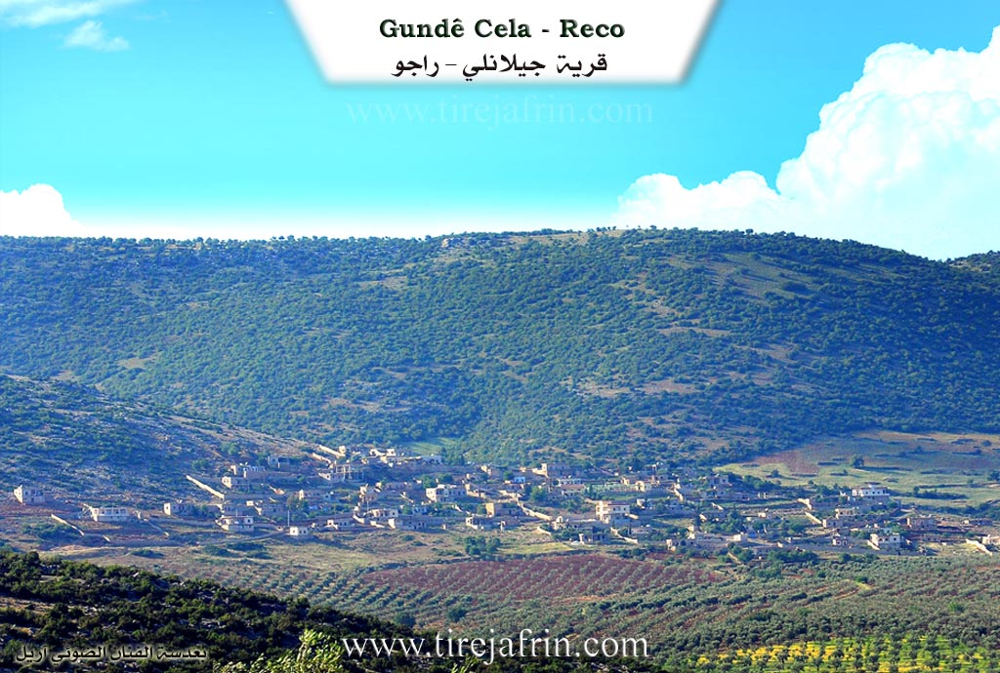
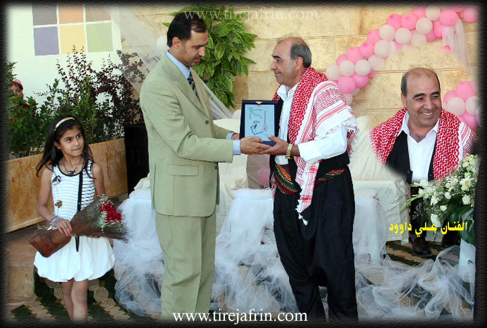
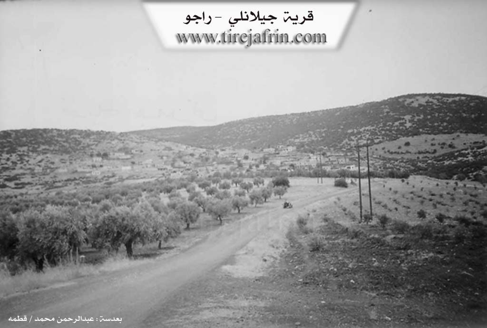

General Information
Nahiya (Subdistrict)
Reco
Also Known As
Al-Ghuzlan, Cela, Jalo, Jilanli, الغزلان, الغزلان، جالور, جيلانلي, جالو
Tribes
Celaliyan
Families, Clans, etc.
Bilê Dadik, Bilê Xêlt, Dedikê, Did Jindon, Hebeşê Hemê, Hemê, Kêlê, Kêlê Yûsiv, Mihe Dadik, Mist, Moli Dedik, Moli Çolîq, Nasirê Celî, Nasirê Celîl, Çolîq, Îso, Şanşalo

Photos



Basic Information about Cela
Source: Ax û Welat
Etymology: Named after the founder Cel (or Celî), the brother of Adem
Caves: Şikefta Topelê
Number of Caves: 2
Hills: Sergirekê, Gula Qişlê
Shrines: Ziyaretgeha Kulê
Ruins: Qişle, Erdê Qoloş
Trees: Darê Reş
Wells: Taqa Bê, Bîra Rûmanî, Bîra Qilavê
Other Landmarks: Çiyayê Cebelê, Deşta Cûmê, Geliyê Kulê, Çiyayê Bilîl, Çiyayê Keleş
Summaries
I. Summary from TirejAfrin Site of Cela (English)
According to the book جبل الكرد|Mountain of the Kurds (Afrin) Geographic Study:
1 - PhD/Villages/Cela (Cela), جيلانلي (جيلانلي), الغزلان (الغزلان) /933n – 217h - 12km - 790m/:
Jalali (جفلالي): A Kurdish tribe found on the slopes of Ararat Mountains (جبال آرارات) and near Amadiya City (مدينة العمادية), and in the Shahrzour Region (منطقة شهرزور) in southern Kurdistan (كردستان). The Arabizer believed the name means "gazelle" from Turkish so he translated it to "Al-Ghuzlan" (الغزلان).
It is a small village located on the southern slope of "Bilaliko Mountain" (جبل بلاليكو) covered with oak forests.
According to the book Afrin... Her River and Green Hills:
Jilanli: A village in Kurdistan Mountain (جبل الكرد) belonging to Rajo District (ناحية راجو), Afrin Region (منطقة عفرين), Aleppo Governorate (محافظة حلب).
It is a small village located in the northern part of the mentioned mountain on the slope of the Kilsi Heights (مرتفع كلسي), and overlooks agricultural lands with alluvial soil in its southeast. It is 15 km northeast of Rajo Town (بلدة راجو). It is bounded to the north by a high mountain chain called Qara Bil Mountain (جبل /قره بيل/) and Kawenda Village (قرية /كاوندة/) and Sheikh Mohammed Li Village (/شيخ محمدلي/), to the south by a slope and agricultural plain planted with olive, vine and walnut trees and the /Bulbul – Rajo/ road and Alamdar Village (قرية / علمدار /), to the east by a valley and mountain chain and Suqanli Village (قرية /صوقانلي/), and to the west by a rugged mountain chain and valley and Jaqmaq Kabir Village (قرية /جقمق كبير/). The number of its houses is about 50 houses and its age is about 300 years (300 عاماً), knowing that the old village is located on the southern plain slope of the village, then it moved to its current high location to protect its dwellings from rain and floods. Its dwellings are stone-clay with wooden roofs and it has modern dwellings that extended towards the southwest. It has an electricity network and an elementary school. The village drinks from cisterns dug in front of the houses that collect rainwater, and currently they have started digging artesian wells for drinking. It connects with the district center by dirt road. The residents work in rainfed agriculture (olives, vines, grains, legumes, and fruit trees) on an area of 217 hectares, and raise sheep and goats. Some of them work in charcoal production from oak wood. Among the families in the village: (Al Bilal Family (آل بلال) (Bilah (بله)) - Al Mustafa Family (آل مصطفى) (Mistah (مسته)) - Al Dawoud Family (آل داود) (Dadk (دادك)) - Al Ziba Family (آل زيبه) - Al Kil Dado Family (آل كيل دادو) (Kilah (كيله))).
The village is known for its spirit of humor and joy. It is mentioned that the artist Ali Dawoud (علي داود) is from the residents of this village.
Village Headman: Shukri Ahmed Hassan (شكري أحمد حسن)
II. Summary from Ax û Walat Transcript of Cela
Source: https://www.youtube.com/watch?v=kmPQZ5qKGxw
Village History and Origins
The village of Cela (also referred to as Jela) is located in the Reco district of the Efrîn region, situated at the foot of Çiyayê Cebelê. According to oral history recounted by village elder Hecî, the village’s origins trace back to two brothers, Cel and Adem, who migrated from Cizîra Botan. They belonged to the Celaliyan tribe. Initially, the group settled near Xulolka at a location known as Sergirekê, about five kilometers east of the current site, where ancient graves still exist. Eventually, the brothers separated; Adem founded the village of Edama, while Cel established Cela, which bears his name.
Social Structure and Families
The inhabitants of Cela are primarily descendants of Cel, specifically through an ancestor named Mist. The village social structure is defined by five principal families (malbat), including Nasirê Celî, Îso, Kêlê, and Hebeşê Hemê. Another lineage mentioned is Moli Dedik. Additionally, a family known as Şanşalo joined the village approximately 150 years ago, integrating into the community through marriage. Some branches, such as Moli Çolîq, eventually moved to the city of Efrîn. The community prides itself on a history of internal peace, with elders claiming that no killings have occurred within the village history due to their strong social bonds, referred to as "Kolkê me."
Landmarks and Sacred Sites
The landscape around Cela is dotted with significant historical and natural features. A notable sacred site is Ziyaretgeha Kulê, located in Geliyê Kulê to the north. The village is also home to mysterious geological formations. One such feature is Taqa Bê (The Wind Arch/Well), a deep chasm that emits warm air in winter and cool air in summer. Local legend holds that ancestors once threw a dog into Taqa Bê, and it emerged alive from a well in the Deşta Cûmê plain, suggesting a deep underground connection. Other water sources include the ancient Bîra Rûmanî (Roman Well) and Bîra Qilavê, a volcanic vent-like opening of unknown depth. To the east lie the ruins of Qişle and Erdê Qoloş, believed to be the site of an ancient town.
Historical Events and Culture
The village has maintained distinct traditions and resilience against external pressures. During the era of the Murîd religious movement, which caused unrest in the Kurdax region, the village head Reşê Hesen and other elders like Bilê Dadik refused to allow the Murîd followers to enter Cela, protecting their community. In the realm of education, before official Kurdish language schools were permitted, children were taught under a specific tree known as Darê Reş. Educator Mamosta Ehmed (known as Ustad Cîlo) recounted teaching generations of children from Cela, Bilîlko, and Çeqmaqê under this tree or in secret, navigating the prohibitions against the Kurdish language. Today, the village is also known for its agriculture, particularly cherry orchards (Kêraz), and preserves its musical heritage through singers like Elî Dawûd.
Source: https://www.youtube.com/watch?v=hOiLccYOBK8
Analysis of the Village of Celê
The village of Celê, also referred to as Jela or Celemê, is located in the Reco district of the Efrîn region. It sits 5 kilometers northeast of the town of Reco and 45 kilometers north of Efrîn. The village is situated on the slopes of Çiyayê Terebêlê, overlooking the Deşta Camiye plain to the south.
History and Origins
The village’s history is defined by the migration of the Celaliyan tribe from Cizîra Botan. According to local oral history recounted by the elder Hecî, the founders were two brothers named Cel and Adem. Upon arriving in the region, they initially settled at a location called Sekrekê near Xulalka. Eventually, they separated; Adem founded the neighboring village of Adama, while Cel established Celê, which bears his name. The village was not always in its current location; historically, it was situated at Sergirekê, approximately 5 kilometers to the east, where ancient graves can still be found.
Social Structure
The residents identify as members of the Celaliyan tribe. The social fabric consists of several distinct families. An elder explains that after the time of Cel, an ancestor named Mist established five core lineages. The narrator identifies the four prominent families today as Nasirê Celîl, Îso, Kêlê, and Hebeşê Hemê. Other family names mentioned include Mala Çolîq, Mala Dedikê, and Mala Hemê. A specific group, Did Jindon, is noted to have joined the village later, approximately 105 years ago. While the current population is around 1,200 people, significant migration has occurred, with families such as Mala Çolîq moving to Efrîn and Heleb.
Sacred Sites and Landmarks
The village contains several significant historical and natural landmarks. A sacred site known as Ziyareta Kuhle is located in a deep valley to the north. To the east lies an area of ruins called Qişle and a site called Erdê Qoş, which is believed to be an ancient threshing floor. A large cave known as Şikefta Topelê was historically used for habitation and later for livestock.
Water sources play a major role in the village's geography. There is a "Roman well" (Bîra Rûmanî) and another deep well named Bîra Qilabel, which is described as an ancient volcanic vent of unknown depth. A unique natural feature on the ridge is Taqa Bê (The Wind Vent). Locals describe it as an opening connected to the underground water systems; it emits warm air during the winter and cool air during the summer.
Culture and Reputation
Celê is well-regarded for its agriculture, particularly its cherry orchards. Women in the village, such as the hostess visiting Mala Mehmedê Hisênê Zêbê, are known for making cherry jam (leçera kêraza). The village also has a history of education; Ahmed Dawud, known as Ustad Çîlo, began teaching children in 1951 under a tree known as Darê Reş when the Kurdish language was prohibited in schools. The village maintains a musical tradition as well, preserved by figures like the singer Elî Dawud, who was influenced by legendary dengbêjs like Cemîl Horo.
VILLAGE OF CELA
31.5.2016
The village of CELA is affiliated with the Reco district of the Efrîn canton, located 15 km northeast of the city of Reco and 45 km north of the city of Efrîn.
Previously, the village of CELA was in a place called ((Segrekê)), which is about 5 km east of the village, and to this day there are some old graves there.
There were two brothers named ((’Edem and Celî)); ’Edem founded the village of ’Edema, and Celî also settled in the place of the village of Cela and built the village. This means that the name of the village of CELA comes from the name of the village's founder, or (Celî).
The history of the village's founding is not known, but it is clear that this is an ancient village.
The village of CELA is on the slope of Mount Qere Bêlê and faces the Camiyê plain to the south of the village. To the north are the Geliyê Kulê, where the Kulê shrine is located, and the village of Bilêlko. To the east are Erdê Qişlê and the villages of Xilalka and Cirqa. To the south are Mount Bilêl and the villages of Elemdara and Çeqmaqa biçûk. And to the west are the village of Çeqmaqa Mezin and Mount Keleşk.
There is an old well to the south of the village, and the villages of Cela and Bilêlko used to get their drinking water from it, and shepherds watered their flocks at it. In the Camiyê plain, which is to the south of the village, there are many water wells. In the past, there was a mill in that area, and water is still there. The people of the villages of Cela, Çeqmaqa, Çençeliya, ’Elemdara, Kêla, and Huscemala get water from there with tractors.
There are 2 caves in the village; one of them is very wide and large and is known by the name (Şikefta Topel). In the past, the people of the village used it for habitation, then it was used for sheep, but now it is empty.
The well of (Qila Bê) is located to the west of the village. It is said that it is a very deep extinct volcanic vent, and its depth is not known.
An ancient site named (Erdê Qûç) is to the east of the village, and it appears that it was the site of an ancient town in past eras.
The mountain that embraces the village is made of blue stones, which are solid stones and are very good and suitable for construction.
The village of Cela has become modern, and almost no old houses remain. Most of the houses in the village are modern and have been built with advanced engineering.
There are 4 families in the village:
The family of Nasir Celî, Îso, Kêlê, and the family of Hebeşê Hemê. The Celî family, who are known as the founders of the village, are not from the CELALIYA tribe of Memê Alan.
About 80 houses and nearly 1200 people live in the village. Also, about 250 people have settled in the city of Efrîn and live there.
Most of the villagers make their living from agriculture, and the cultivation of olive groves and vineyards is paramount, along with fruit trees like cherries, apricots, almonds, and other trees.
Some families own livestock such as sheep and goats and sell their products in the city of Reco.
More than 10 people work in the institutions and bodies of the Autonomous Administration in Reco. About 15 people also work in various factories in Reco. There is also a restaurant in Meydankê and event halls for the village people, and a good number of people work there. There is a stone quarry, and many various shops belonging to the village people in Efrîn, and their owners and workers make their living from them.
There are 6 martyrs from the village who have given their lives in various times for the freedom and honor of the Kurdish people:
Ş. Kendal, Xebat, Rênas, Îbo, Kerem, and Ş. Serbest Efrînî.
One of the famous people of the village of Cela is the folk singer: ((ELÎ DAWÛD)), who has played a great role in the field of preserving and promoting the Kurdish art and singing of the region, and has created many songs and melodies, and has participated in many national, revolutionary, and social events. Therefore, this village is generally a leader of dance, meaning it loves singing and dancing.
Teacher ((EHMED DEHDO)), known as (Mamoste Çîlo), is one of the first teachers or intellectuals of the Efrîn canton. Along with his early colleagues (Teacher Heyder, Xelîl Ehmed, Fethî Bedrî, and Ezîz Gedro), he taught in the village and cities of Efrîn. Before the school opened in the village, teacher Ehmed would voluntarily gather the village children in homes and sometimes under the Black Tree and at Serî Benê, teaching them and instructing them in reading. It is worth mentioning that he is one of the founders of (EL PARTÎ), meaning the first Kurdish party in Rojava, which was founded in 1947.
The village has protected itself for a long time, and there are no significant problems in the village; that is, the problems that arise are quickly resolved by the Commune. From the beginning, it has protected itself from the rule of aghas and the attacks of gangs and has shown unparalleled resistance.
Many attacks from the Mirûdan occurred on the village, but the villagers rejected and broke those attacks.
Transcripts
Foundation/Origin Information of Cela
The old village was located on the southern plain slope, then moved to its current high location to protect dwellings from rain and floods.
Source: TirejAfrin Site
Possible Village Name Meaning of Cela
The name comes from the Jalali tribe. An Arabizer believed the name meant "gazelle" in Turkish and translated it to "Al-Ghuzlan".
Source: TirejAfrin Site